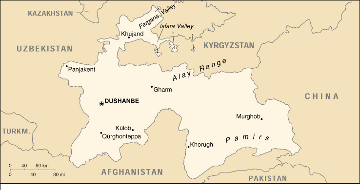

![[Country Flag of Tajikistan]](../flags/ti-lgflag.jpg)
| Tajikistan |
|
         |  | |
| Introduction |
Background: Tajikistan has experienced three changes in government and a civil war since it gained independence in 1991 when the USSR collapsed. A peace agreement among rival factions was signed in 1997, but implementation has progressed slowly. Nevertheless, a number of opposition political parties have been legalized and are participating in elections, suggesting that the country may be stabilizing politically. Russian-led peacekeeping troops are based throughout the country, and Russian-commanded border guards are stationed along the border with Afghanistan.
| Geography |
Location: Central Asia, west of China
Geographic coordinates: 39 00 N, 71 00 E
Map references: Commonwealth of Independent States
Area:
total:
143,100 sq km
land:
142,700 sq km
water:
400 sq km
Area - comparative: slightly smaller than Wisconsin
Land boundaries:
total:
3,651 km
border countries:
Afghanistan 1,206 km, China 414 km, Kyrgyzstan 870 km, Uzbekistan 1,161 km
Coastline: 0 km (landlocked)
Maritime claims: none (landlocked)
Climate: midlatitude continental, hot summers, mild winters; semiarid to polar in Pamir Mountains
Terrain: Pamir and Alay mountains dominate landscape; western Fergana Valley in north, Kofarnihon and Vakhsh Valleys in southwest
Elevation extremes:
lowest point:
Syrdariya 300 m
highest point:
Pik Imeni Ismail Samani 7,495 m
Natural resources: hydropower, some petroleum, uranium, mercury, brown coal, lead, zinc, antimony, tungsten
Land use:
arable land:
6%
permanent crops:
0%
permanent pastures:
25%
forests and woodland:
4%
other:
65% (1993 est.)
Irrigated land: 6,390 sq km (1993 est.)
Natural hazards: NA
Environment - current issues: inadequate sanitation facilities; increasing levels of soil salinity; industrial pollution; excessive pesticides; part of the basin of the shrinking Aral Sea suffers from severe overutilization of available water for irrigation and associated pollution
Environment - international agreements:
party to:
Biodiversity, Climate Change, Desertification, Environmental Modification, Ozone Layer Protection
signed, but not ratified:
none of the selected agreements
Geography - note: landlocked
| People |
Population: 6,440,732 (July 2000 est.)
Age structure:
0-14 years:
42% (male 1,362,521; female 1,336,205)
15-64 years:
54% (male 1,714,545; female 1,734,430)
65 years and over:
4% (male 126,170; female 166,861) (2000 est.)
Population growth rate: 2.12% (2000 est.)
Birth rate: 33.56 births/1,000 population (2000 est.)
Death rate: 8.64 deaths/1,000 population (2000 est.)
Net migration rate: -3.71 migrant(s)/1,000 population (2000 est.)
Sex ratio:
at birth:
1.05 male(s)/female
under 15 years:
1.02 male(s)/female
15-64 years:
0.99 male(s)/female
65 years and over:
0.76 male(s)/female
total population:
0.99 male(s)/female (2000 est.)
Infant mortality rate: 117.42 deaths/1,000 live births (2000 est.)
Life expectancy at birth:
total population:
64.08 years
male:
60.95 years
female:
67.38 years (2000 est.)
Total fertility rate: 4.35 children born/woman (2000 est.)
Nationality:
noun:
Tajikistani(s)
adjective:
Tajikistani
Ethnic groups: Tajik 64.9%, Uzbek 25%, Russian 3.5% (declining because of emigration), other 6.6%
Religions: Sunni Muslim 80%, Shi'a Muslim 5%
Languages: Tajik (official), Russian widely used in government and business
Literacy:
definition:
age 15 and over can read and write
total population:
98%
male:
99%
female:
97% (1989 est.)
| Government |
Country name:
conventional long form:
Republic of Tajikistan
conventional short form:
Tajikistan
local long form:
Jumhurii Tojikiston
local short form:
none
former:
Tajik Soviet Socialist Republic
Data code: TI
Government type: republic
Capital: Dushanbe
Administrative divisions:
2 oblasts (viloyatho, singular - viloyat) and one autonomous oblast* (viloyati mukhtori); Viloyati Mukhtori Kuhistoni Badakhshoni* (Khorugh - formerly Khorog), Viloyati Khatlon (Qurghonteppa - formerly Kurgan-Tyube), Viloyati Leninobod (Khujand - formerly Leninabad)
note:
the administrative center name follows in parentheses
Independence: 9 September 1991 (from Soviet Union)
National holiday: National Day, 9 September (1991)
Constitution: 6 November 1994
Legal system: based on civil law system; no judicial review of legislative acts
Suffrage: 18 years of age; universal
Executive branch:
chief of state:
President Emomali RAHMONOV (since 6 November 1994; head of state and Supreme Assembly chairman since 19 November 1992)
head of government:
Prime Minister Ogil OQILOV (since 20 January 1999)
cabinet:
Council of Ministers appointed by the president, approved by the Supreme Assembly
elections:
president elected by popular vote for a seven-year term; election last held 6 November 1999 (next to be held NA 2006); prime minister appointed by the president
election results:
Emomali RAHMONOV elected president; percent of vote - Emomali RAHMONOV 96%, Davlat USMONOV 4%
Legislative branch:
bicameral Supreme Assembly or Majlisi Oli (181 seats; next election 96 seats; members are elected by popular vote to serve five-year terms)
elections:
last held 26 February and 12 March 1995 (next to be held 27 February and 23 March 2000)
election results:
percent of vote by party - NA; estimated seats by party - Communist Party and affiliates 100, People's Party 10, Party of People's Unity 6, Party of Economic and Political Renewal 1, other 64
Judicial branch: Supreme Court, judges are appointed by the president
Political parties and leaders: Democratic Party or TDP [Mahmadruzi ISKANDDAROV, chairman]; Islamic Rebirth Party [Muhammadsharif HIMMAT-ZODA, chairman]; Lali Badakhshan Movement [Atobek AMIRBEKOV]; National Unity Party - evolved from the People's Party and Party of People's Unity; Party of Justice and Development [Rahmatullo ZOIROV]; People's Democratic Party of Tajikistan or PDPT [Abdulmajid DOSTIEV]; Rastokhez (Rebirth) Movement [Tohiri ABDUJABBOR]; Tajik Communist Party or CPT [Shodi SHABDOLOV]; Tajikistan Party of Economic and Political Renewal or TPEPR [leader NA]; United Tajik Opposition or UTO [Said Abdullo NURI] - an umbrella group including; Adolatho "Justice" Party [Abdurahmon KARIMOV, chairman]
International organization participation: AsDB, CCC, CIS, EAPC, EBRD, ECE, ECO, ESCAP, FAO, IBRD, ICAO, ICRM, IDA, IDB, IFAD, IFC, IFRCS, ILO, IMF, Intelsat, IOC, IOM, ITU, OIC, OPCW, OSCE, UN, UNCTAD, UNESCO, UNIDO, UPU, WFTU, WHO, WIPO, WMO, WTrO (observer)
Diplomatic representation in the US: Tajikistan does not have an embassy in the US, but does have a permanent mission to the UN: address - 136 East 67th Street, New York, NY 10021, telephone - [1] (212) 472-7645, FAX - [1] (212) 628-0252; permanent representative to the UN is Rashid ALIMOV
Diplomatic representation from the US:
chief of mission:
Ambassador Robert FINN
embassy:
temporarily collocated with the US Embassy in Almaty (Kazakhstan)
mailing address:
use embassy street address
telephone:
NA
FAX:
NA
Flag description: three horizontal stripes of red (top), a wider stripe of white, and green; a gold crown surmounted by seven gold, five-pointed stars is located in the center of the white stripe
| Economy |
Economy - overview: Tajikistan has the lowest per capita GDP among the 15 former Soviet republics. Cotton is the most important crop. Mineral resources, varied but limited in amount, include silver, gold, uranium, and tungsten. Industry consists only of a large aluminum plant, hydropower facilities, and small obsolete factories mostly in light industry and food processing. The Tajikistani economy has been gravely weakened by six years of civil conflict and by the loss of subsidies from Moscow and of markets for its products. Tajikistan thus depends on aid from Russia and Uzbekistan and on international humanitarian assistance for much of its basic subsistence needs. Even if the peace agreement of June 1997 is honored, the country faces major problems in integrating refugees and former combatants into the economy. The future of Tajikistan's economy and the potential for attracting foreign investment depend upon stability and continued progress in the peace process.
GDP: purchasing power parity - $6.2 billion (1999 est.)
GDP - real growth rate: 2% (1999 est.)
GDP - per capita: purchasing power parity - $1,020 (1999 est.)
GDP - composition by sector:
agriculture:
34%
industry:
24%
services:
42% (1997)
Population below poverty line: NA%
Household income or consumption by percentage share:
lowest 10%:
NA%
highest 10%:
NA%
Inflation rate (consumer prices): 22% (1999 est.)
Labor force: 1.9 million (1996)
Labor force - by occupation: agriculture and forestry 50%, industry 20%, services 30% (1997 est.)
Unemployment rate: 5.7% includes only officially registered unemployed; also large numbers of underemployed workers and unregistered unemployed people (December 1998)
Budget:
revenues:
$NA
expenditures:
$NA, including capital expenditures of $NA
Industries: aluminum, zinc, lead, chemicals and fertilizers, cement, vegetable oil, metal-cutting machine tools, refrigerators and freezers
Industrial production growth rate: 5% (1999 est.)
Electricity - production: 13.27 billion kWh (1998)
Electricity - production by source:
fossil fuel:
1.51%
hydro:
98.49%
nuclear:
0%
other:
0% (1998)
Electricity - consumption: 12.561 billion kWh (1998)
Electricity - exports: 3.33 billion kWh (1998)
Electricity - imports: 3.55 billion kWh (1998)
Agriculture - products: cotton, grain, fruits, grapes, vegetables; cattle, sheep, goats
Exports: $634 million (1999 est.)
Exports - commodities: aluminum, electricity, cotton, fruits, vegetable oil, textiles
Exports - partners: Uzbekistan 37%, Liechtenstein 26%, Russia 16%, Kazakhstan 6% (1997)
Imports: $770 million (1999 est.)
Imports - commodities: electricity, petroleum products, aluminum oxide, machinery and equipment, foodstuffs
Imports - partners: Netherlands 32%, Uzbekistan 29%, Switzerland 20%, Russia 9% (1997)
Debt - external: $1.3 billion (1999 est.)
Economic aid - recipient: $64.7 million (1995)
Currency: Tajikistani ruble (TJR) = 100 tanga
Exchange rates: Tajikistani rubles (TJR) per US$1 - 1550 (January 2000), 998 (January 1999), 350 (January 1997), 284 (January 1996)
Fiscal year: calendar year
| Communications |
Telephones - main lines in use: 263,000 (1995)
Telephones - mobile cellular: NA
Telephone system:
poorly developed and not well maintained; many towns are not reached by the national network
domestic:
cable and microwave radio relay
international:
linked by cable and microwave radio relay to other CIS republics, and by leased connections to the Moscow international gateway switch; Dushanbe linked by Intelsat to international gateway switch in Ankara (Turkey); satellite earth stations - 1 Orbita and 2 Intelsat
Radio broadcast stations: AM 9, FM 6, shortwave 5 (1998)
Radios: 1.291 million (1991)
Television broadcast stations: 0 (there are, however, repeaters that relay programs from Russia, Iran, and Turkey) (1997)
Televisions: 860,000 (1991)
Internet Service Providers (ISPs): NA
| Transportation |
Railways:
total:
480 km in common carrier service; does not include industrial lines (1990)
Highways:
total:
13,700 km
paved:
11,330 km (these roads are said to be hard-surfaced, meaning that some are paved and some are all-weather gravel surfaced)
unpaved:
2,370 km (1996 est.)
Pipelines: natural gas 400 km (1992)
Ports and harbors: none
Airports: 59 (1994 est.)
Airports - with paved runways:
total:
14
over 3,047 m:
1
2,438 to 3,047 m:
5
1,524 to 2,437 m:
7
914 to 1,523 m:
1 (1994 est.)
Airports - with unpaved runways:
total:
45
914 to 1,523 m:
9
under 914 m:
36 (1994 est.)
| Military |
Military branches: Army, Air Force, Air Defense Forces, Presidential National Guard, Security Forces (internal and border troops)
Military manpower - military age: 18 years of age
Military manpower - availability:
males age 15-49:
1,529,832 (2000 est.)
Military manpower - fit for military service:
males age 15-49:
1,253,427 (2000 est.)
Military manpower - reaching military age annually:
males:
68,262 (2000 est.)
Military expenditures - dollar figure: $17 million (FY97)
Military expenditures - percent of GDP: 1.8% (FY97)
| Transnational Issues |
Disputes - international: portions of the boundary with China are indefinite; territorial dispute with Kyrgyzstan on northern boundary in Isfara Valley area
Illicit drugs: limited illicit cultivation of cannabis, mostly for domestic consumption; opium poppy cultivation negligible in 1998 because of government eradication program; major transshipment point for illicit drugs from Southwest Asia to Russia and Western Europe